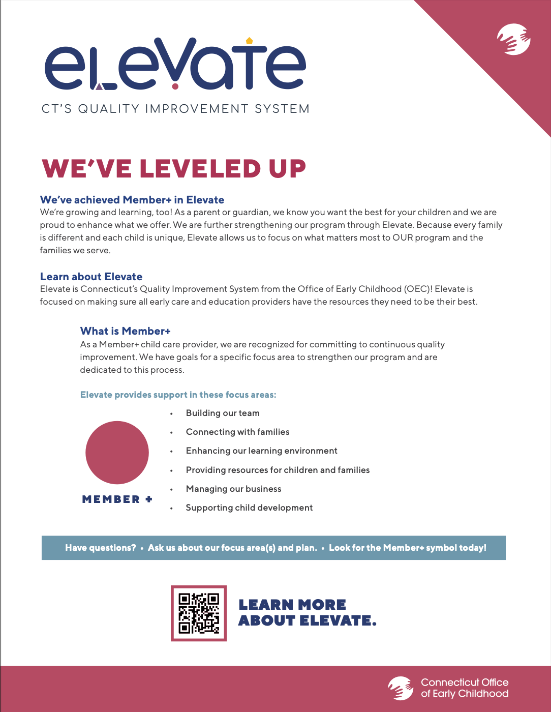

Happy Hands PREP
Elevate +
We’re growing and learning too! Happy Hands PREP is thrilled to have achieved Member+ level in Elevate, CT’s Quality Improvement System for childcare. Learn more about Elevate.
